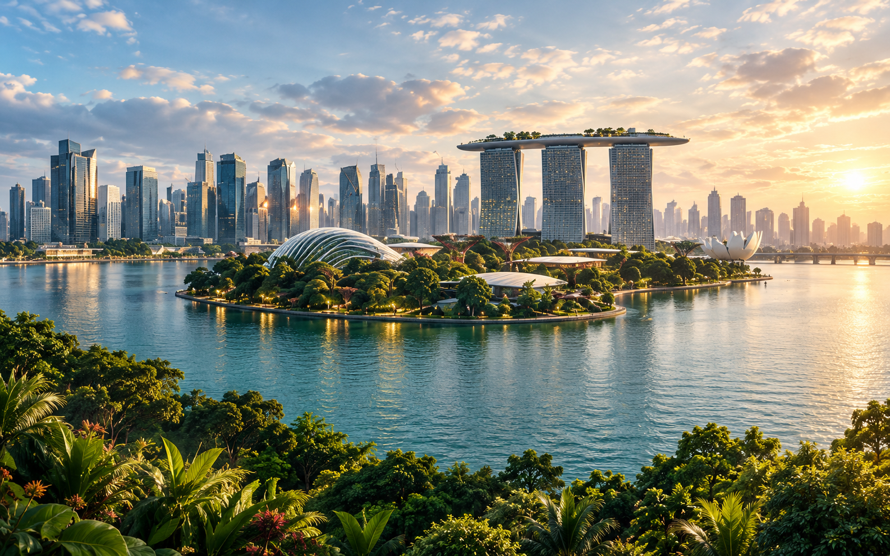
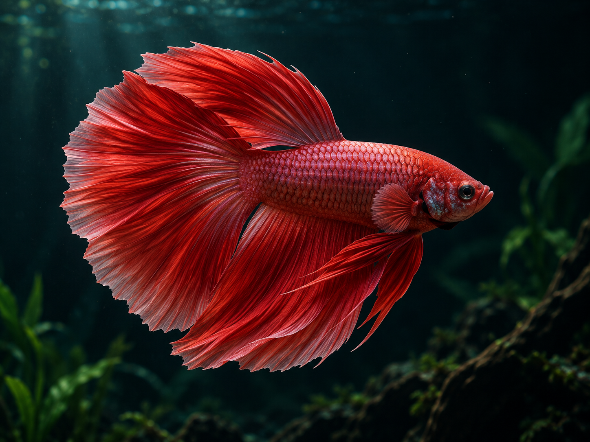
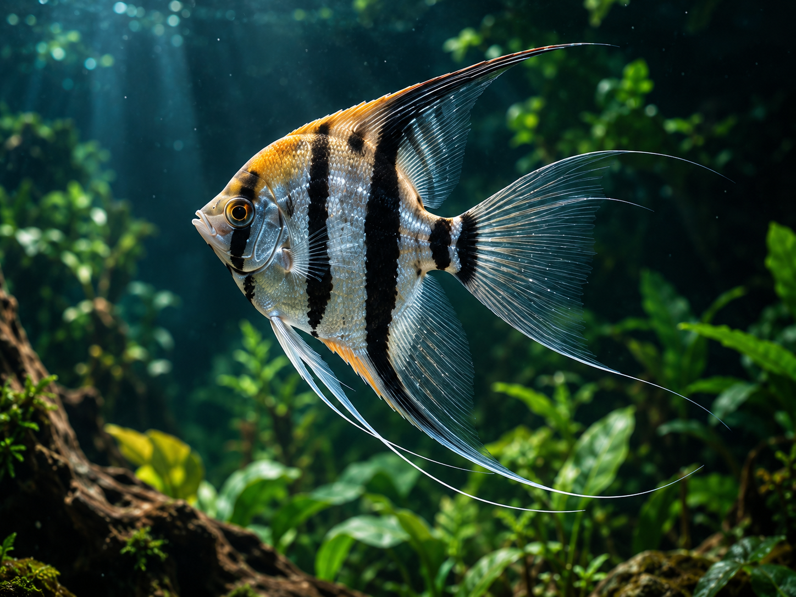
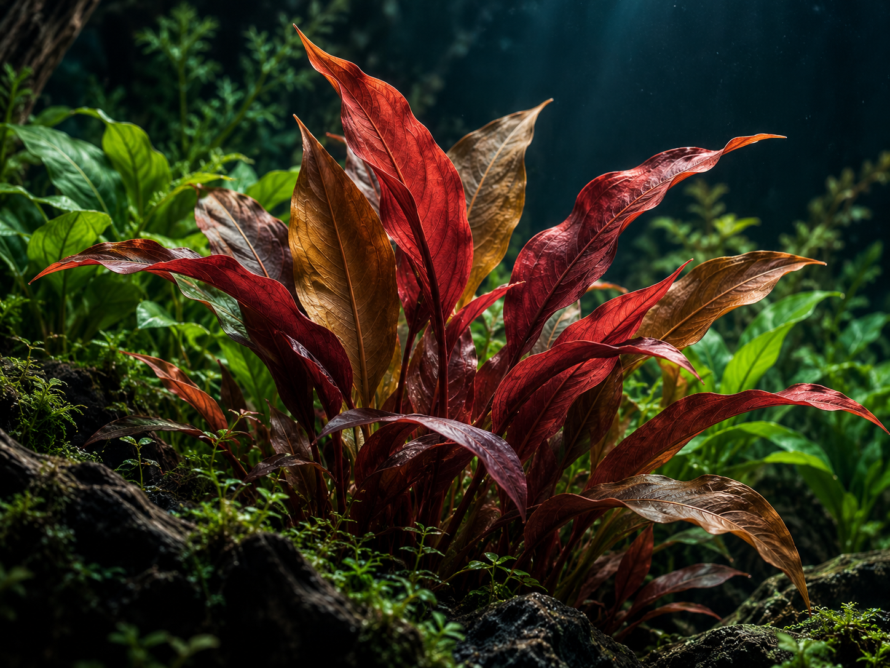
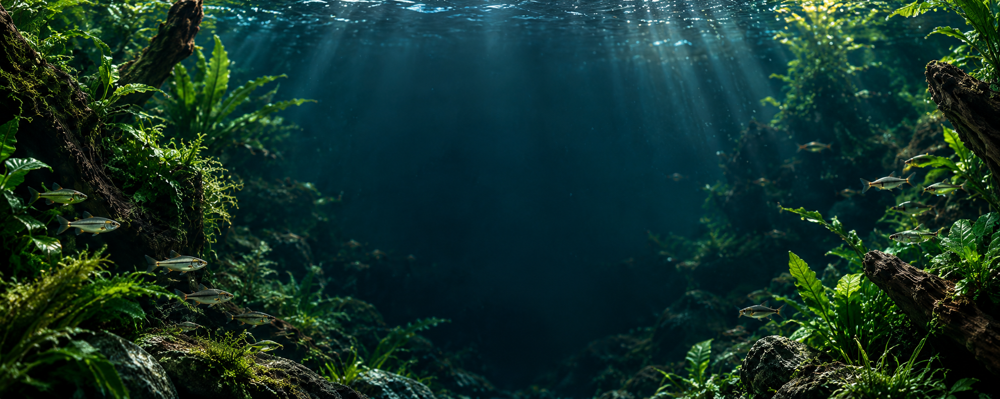

Shared inputs · baseline v2 · 9 standalone images
Premium Aquatic Image Assets
The same image sources are supplied to both CLI implementations. These AI-generated scenes are illustrative, not documentary evidence of a company or actual inventory. Click an image to inspect the original file.
Usage notes Slot map and provenance Generation prompts
Hero — dark left space, fish on right 1882 × 836 · hero-angelfish.png 
Heritage — illustrative waterfront 1586 × 992 · heritage-waterfront.png Collection — ornamental fish 1448 × 1086 · collection-ornamental-fish.png Collection — green aquatic plants 1448 × 1086 · collection-aquatic-plants.png Collection / highlight — driftwood 1448 × 1086 · collection-driftwood.png 
Highlight — red ornamental fish 1448 × 1086 · highlight-red-betta.png 
Highlight — striped ornamental fish 1448 × 1086 · highlight-angelfish.png 
Highlight — red aquatic plants 1448 × 1086 · highlight-red-plants.png 
Enquiry / highlights — underwater panorama 1983 × 793 · enquiry-underwater-school.png
This is an offline asset preview, not either contestant's implemented landing page. Layout fidelity and functionality remain untested until those pages exist.